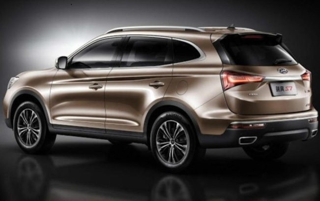

The JAC T60 has nothing to do with the previous model (which in turn was a restyling of the T6). It is the Chinese Refine S4, a medium-sized model with 4.41 m in length, the same measure as the Jeep Compass, the leading segment in sales in the country.
If you are not a fan of current SUVs, I have good news and bad news. First, the “bad”: this segment is still strong and should continue to grow for at least another four years. This is indicated by Volkswagen, which projects a 70% growth in the volume of sales of this type of vehicle in Latin America by 2022.
The good news is that if you wrinkle your nose at SUVs out of suspicion of driving pleasure, you can review your opinion. With the advancement of engineering and technology, today's SUVs are nothing like the models of the past. The most modern crop combines driveability much closer to that of medium hatches than that of utility vehicles in the 2000s.